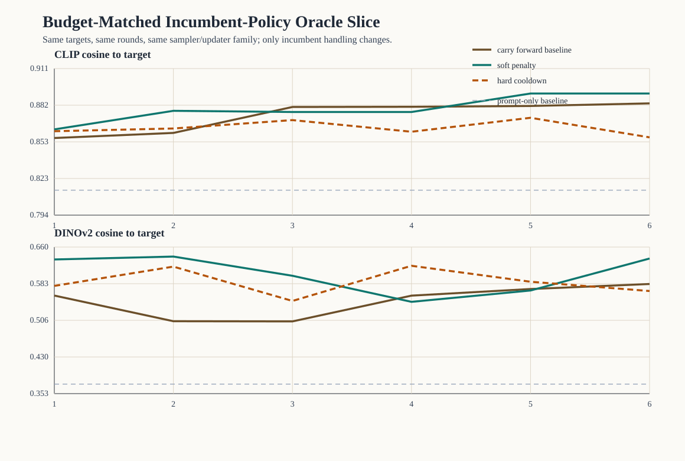

Incumbent-Policy Oracle Slice
This budget-matched oracle slice compares three incumbent-handling policies under one fixed proposal and update family.
Scope
- policies:
3 - runs:
9 - rounds:
54 - targets:
3
Policy summary
| policy | runs | final CLIP (mean ± sd) | final DINOv2 (mean ± sd) | improves after round 4 | last-3 identical-image plateaus | mean unique selected-image ratio |
|---|---|---|---|---|---|---|
| carry-forward baseline | 3 | 0.884 ± 0.037 | 0.583 ± 0.134 | 2/3 | 1/3 | 0.556 |
| soft incumbent penalty | 3 | 0.891 ± 0.033 | 0.636 ± 0.112 | 1/3 | 2/3 | 0.389 |
| hard incumbent cooldown | 3 | 0.856 ± 0.034 | 0.568 ± 0.132 | 1/3 | 0/3 | 0.556 |
Interpretation boundary
- all policies use the same targets, model family, candidate budget, and metric pair
- CLIP still drives oracle selection, while DINOv2 remains a secondary evaluator
- this slice compares incumbent-handling tradeoffs, not general image quality
- later-round movement and final proxy recovery should be read together, not separately
Figure
